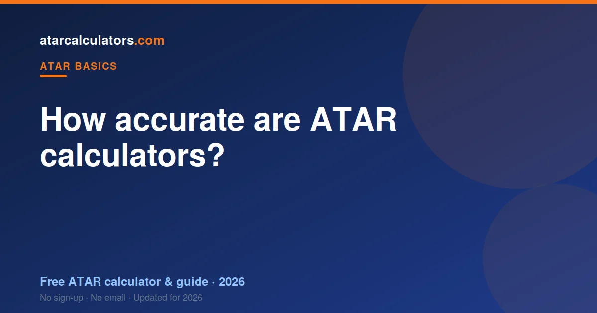

ATAR calculators give a close estimate, not your exact ATAR. Your real ATAR depends on how every student performs and on the exact scaling for that year, which is only known once all results are in. A good calculator, using the latest official scaling data, gets close, but it can never be exact until results are finalised.
Key takeaways
- ATAR calculators give an estimate, not your exact result.
- Your real ATAR depends on how everyone else performs that year.
- Accuracy depends on the scaling data the calculator uses.
- A good calculator uses the latest official scaling from your state.
- Estimates are most accurate near the top and middle of the range.
- Use an estimate to set targets and plan, not as a guarantee.

Why calculators can only estimate
Your ATAR is a rank, so it depends on how every other student performs, not just on you. That information does not exist until all results are finalised. No calculator can know it in advance.
On top of that, the exact scaling changes a little each year with the cohort. A calculator has to use last year’s scaling as its best guide. Both facts mean a calculator gives a close estimate, never the exact final number.
What makes an ATAR calculator accurate
The single biggest factor is the scaling data. A calculator that uses the latest official scaling report from your state will be far closer than one using old or made-up numbers.
The method matters too. A good calculator scales each subject, combines your best results the way your state does, and then maps that to a rank. A calculator that just averages your marks is not really estimating an ATAR at all. See how ATAR is calculated.
Why two calculators give different results
If two calculators disagree, it is almost always because they use different scaling data or different methods. One might use this year’s official report; another might use figures from years ago.
Some also take shortcuts, such as ignoring how subjects are combined, or applying one state’s rules everywhere. This is why it is worth using a calculator that is transparent about its data and built for your state.
How close is an ATAR estimate to the real result?
With good data, an estimate is usually close, often within a few points of the final ATAR. It will not be exact, but it is a reliable guide for planning.
The estimate tends to be most accurate through the middle and upper parts of the range, where most students sit. At the very top, tiny mark differences move the rank in ways no calculator can perfectly predict, so treat those estimates as approximate.
What affects your estimate’s accuracy
A few things change how close your estimate lands. The accuracy of the marks you enter matters most: garbage in, garbage out. Predicted marks give a rougher estimate than real ones.
Year-to-year shifts in scaling and in the strength of the cohort also nudge the result. And unusual subject combinations, or subjects with small cohorts, are harder to estimate precisely. None of this makes a calculator useless — it just means the number is a guide.
How to use an ATAR estimate well
Use it to plan, not to panic or celebrate. An estimate tells you roughly where you stand, which helps you set a realistic target and see which subjects move your rank most.
Re-run it as your real marks come in, and it gets more accurate. Compare it with the cut-off for your course, aim a little above, and let it guide your effort for the rest of the year.
How our calculators work
Our ATAR calculators use the latest official scaling data for each state, scale your subjects, combine your best results the way your state does, and map that to an estimated ATAR.
We are open about the data and method behind them, which you can read on our methodology page. The goal is an honest, useful estimate — close enough to plan around, with no false promise of an exact result.
Estimate, prediction and official result
Three words get mixed up here. An estimate is what a calculator gives you now, based on last year’s scaling and the marks you enter. A prediction usually means an estimate built from marks you expect, rather than real ones, so it is rougher still. The official result is the only exact figure, and only your admissions centre can produce it.
Keeping these apart helps you judge any number you see. A confident-looking estimate is still an estimate, and no tool can turn it into the official result before results day.
When estimates are least reliable
Some situations are harder to estimate than others. Very high ranks are the trickiest, because at the top a tiny mark difference moves the rank in ways no calculator can perfectly predict. Unusual subject combinations, and subjects with small cohorts, are also harder to pin down.
Predicted marks, rather than real ones, add their own uncertainty. None of this makes a calculator pointless. It just means you should treat the number as a guide with a margin, and re-run it as your real marks arrive.
Common questions
Can an ATAR calculator predict my exact ATAR?
No. Your exact ATAR depends on how every student performs and on the exact scaling for that year, which is only known once results are finalised. A good calculator gives a close estimate, not the exact figure.
Why do ATAR calculators give different results?
Usually because they use different scaling data or methods. One might use the latest official report while another uses old figures, or takes shortcuts like averaging marks instead of scaling and combining them properly.
What data do accurate calculators use?
The most accurate calculators use the latest official scaling report from your state, scale each subject, and combine your best results the way your state does, rather than simply averaging your marks.
How close is an ATAR estimate to the real result?
With good scaling data, an estimate is usually within a few points of the final ATAR. It is most accurate through the middle and upper range, and more approximate at the very top.
Should I trust my ATAR estimate?
Trust it as a guide, not a guarantee. Use it to set targets and plan your preferences, re-run it as real marks come in, and compare it with your course cut-off with a few points of buffer.
What is the difference between an ATAR estimate and a prediction?
An estimate uses last year’s scaling and the marks you enter. A prediction usually means an estimate built from marks you expect rather than real ones, so it is rougher. Only your admissions centre produces the exact official result.
When are ATAR estimates least reliable?
Estimates are least reliable at very high ranks, where tiny mark differences move the rank, and for unusual subject combinations or small-cohort subjects. Predicted marks add further uncertainty.